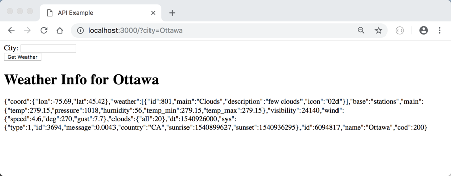
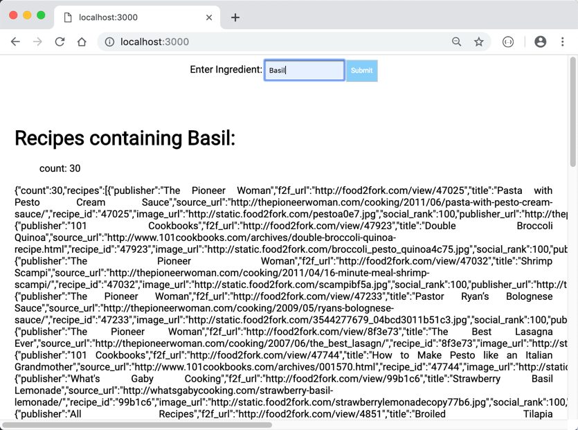

COMP 2406 - Winter 2019
Tut 07: RESTful API's and Express.js
© L.D. Nel 2019
Revisions will be noted here.
Description:
With this tutorial we introduce using RESTful API servers, or services. Many servers now provide an API that lets you query them for data. They provide JSON or XML data rather than providing a webpage as a response. This is because many clients now have javascript that asynchronously updates page contents and thus query servers through their API (application programming interface) expecting JSON data rather than a new html web page to load.
This tutorial is based on work done by Muhammad Awais Qureshi as part of TA'ing COMP 2406 and his 4905 honours project. Thanks Muhammad!
This tutorial has two parts. In part I we build a thin-client with just node.js and it's built in modules. In part II we build a thick-client using the express.js framework. An important point is to compare the two different styles. Both the style of a thick vs. thin client and the style of an express.js app compared to the conventional node.js apps you have been building so far in the course.
IMPORTANT: To do this tutorial you will need to sign up for both an openweather.org API key and a food2fork API key. These keys can take up to an hour or more to activate so you need to do this well in advance of attempting the tutorial.
You can sign up for an openweather.org API key at: http://openweathermap.org/appid
You can sign up for a food2fork API key at www.food2fork.com .
These API keys will have to be pasted into your code in order to connect with their API server.
IMPORTANT: This tutorial is meant to be started as a homework assignment and for you to demonstrate your results at your tutorial session. You will not be able to complete it if you only start when you come to the tutorial.
To get credit for the tutorial you must complete, or make significant progress on, the exercise problems provided and demonstrate your results to the tutorial TA before you leave the tutorial.
Part I: Node.js-based Thin Client:
The demo code will not work until you insert your own API_KEY in server code.You can sign up for an openweather.org API key at: https://openweathermap.org/appid
Here is what it looked like when I signed up to write this tutorial:
Open the the demo_code_nodejs_thin_client folder and run the server server.js found there. To test the server open a browser to http://localhost:3000. You should see a browser application that looks like the following. (The demo code will not work until you insert your own API_KEY in server code.)
Type "Ottawa" into the textfield and click the Get Weather button. You should see the current weather conditions for Ottawa as a result. (Go ahead and try other cities as well.)
Open the server server.js code in your favourite code editor and examine the code.
Observe the following:
1) The code uses, or requires, the querystring built-in node module to help parse the query parameters in the POST request.
2) The server code makes an HTTP GET request to another server hosted by api.openweathermap.org. This is done in the following function:
function getWeather(city, res){
//As of 2015: you need to provide an appid with your request.
//Many API services now require that clients register for an app id.
//Make an HTTP GET request to the openweathermap API
let options = {
host: 'api.openweathermap.org',
path: '/data/2.5/weather?q=' + city +
'&appid=' + API_KEY
}
http.request(options, function(apiResponse){
parseWeather(apiResponse, res)
}).end()
}
Notice this function accesses another server on the internet through its (RESTful) API. (Don't worry about what "RESTful" means at this point.). Notice also that the code is required to provide an app ID key. Many API's have sprung up over recent years and starting around 2015 most now require that you sign up and use an app id key they provide when accessing their services. Some of the free keys limit the amount of access you have to their API service.
Notice this function does a http (GET) request to the weather server and then provides its own client with the JSON data that the weather API server returns.
Study the entire code for our weather server and then proceed with the tutorial problems 1 and 2.
Problem 1)
Notice our demo code implements a thin client. That is, the client is expecting the server to render the html pages. Further notice the server serves HTML content to the browser, not by reading a file but, by constructing an html web page that consists of html tags merged with the data obtained from the weather service. This idea of combining html with data is called "template rendering" and there are "template engines" like Handlebars, PUG etc. made to help with this. We won't concern ouselves with those here though -we will look at them later in the course.
Notice that the server effectively serves an html form to the client which is set up to send an HTTP POST request when the user clicks the Get Weather button, or hits the ENTER key.
Also notice the form data is made accessible as a javascript object by using the querystring module to parse the query data.
For this problem we want to allow the user to use a GET request as well by, for example, accessing http://localhost:3000/?city=Ottawa using the browser address bar. This should provide the server response as before but with the weather data for Ottawa included:
To do this you need to add a new route (if-statement) in the server that detects a GET request and then uses the querystring module to parse the data to obtain the city. Use the existing code for clues on how to do this. Read up on how to use the querystring module if necessary. Basically the querystring module's parse method turns the query parameters (items specified with the ?city=Ottawa syntax in a URL) into a javascript object that lets you access the parameters with syntax like object.city for example.
With this completed you can query the weather by either typing a city name in the text field or by using the browser address bar directly.
Problem 2)
For this problem we want you to display the city name as part of the "Weather Info" heading in the web page. That is, in the sendResponse() function of the server we want you to include the name of the city so the user sees the following in their browser:

Part II: Express.js-based Thick Client:
The demo code will not work until you insert your own API_KEY in server code.You can sign up for an openweather.org API key at: https://openweathermap.org/appid
Part II is based on the demo code in demo_code_expressjs_thick_client folder. In this case it is an express.js based version of the weather server. Again you will have to add your openweather.org API key to get the code to work.
You should familiarize yourself with the online express.js documentation at https://expressjs.com Especially the "Getting Started" section including the "Basic Routing" subsection.
Problem 3)
To run the express-based demo you first need to install the express.js npm modules and other helper modules we are using, like request. The required modules are specified in the dependencies section of the package.json file. To install those modules run the command
npm install
from the directory where your code is located. This will install the npm modules and create a node_modules directory containing the installed modules. It will also create a package-lock.json file which you can ignore for the purposes of this tutrorial. (FYI: the package-lock.json file provides a snapshot of exactly what was installed in the node_modules directory folder in case you later want to install those exact modules, or have another development team member install the exact same modules you are using.)
Study the express-based demo code. It is essentially the same code as presented in the "Introducing Express" section of the course notes. Run the code by exectuing node server.js and verify that it works with your weather API key:

Alternatively you can view the raw JSON weather data for a city specified as a query parameter in the browser address bar:
Or if you have the JSON Formatter extension in Chrome installed you can see the data parsed:

Problem 4)
With Problem 3 as a warm up, we want you to take the express-based demo code and modify it, as necessary, to fetch recipe information from the www.food2fork.com recipe API service instead of weather information. (You will need to do this for assignment 4). For this you will need to sign up with that service and obtain an app ID from them.
Here is a screen capture of me viewing my API key after signing up for the free service:
This time instead of a getWeather() function in public/script.js you will need a getRecipes() function instead. Make the necessary modifications.
Also in the server you will need to replace the
app.get('/weather', (request, response) => {
let city = request.query.city
if(!city) {
return response.json({message: 'Please enter a city name'})
}
const url = `http://api.openweathermap.org/data/2.5/weather?q=${city}&appid=${WEATHER_API_KEY}`
http_request.get(url, (err, res, data) => {
return response.contentType('application/json').json(JSON.parse(data))
})
})
With one that looks more like the following (notice food2fork now uses https and not http in its URL -a recent change):
app.get('/recipes', (request, response) => {
let ingredient = request.query.ingredient
let url = ''
if(!ingredient) {
return response.json({message: 'Please enter an ingredient name'})
url = `https://food2fork.com/api/search?key=${API_KEY}`
}
else {
url = `https://food2fork.com/api/search?key=${API_KEY}&q=${ingredient}`
}
http_request.get(url, (err, res, data) => {
return response.contentType('application/json').json(JSON.parse(data))
})
})
Make all the changes needed to implement a fork2fork.js server instead of a weather_server.js. Make the appropriate changes all over the code so that the user interface labels and the variable names and function names in the code are appropiate. That is, don't have anything referring to weather in code that is supposed to be about recipes.
When completed launch the server:
The user should be able to ask for recipes that include a particular ingredient (food2fork also allows multiple ingredients separated by commas) using the text field on the browser app and see the JSON data returned. (Note there is a delay when accessing food2fork -it will take a second before the data shows up.)

Alternatively you should be able to request a recipe based on the query parameter in the browser address bar and see the JSON data returned.
Alternatively if you have the JSON Formatter extension in Chrome active you can view the JSON data parsed:
When you have completed the above questions demonstrate your work to the TA's to get credit for the tutorial.